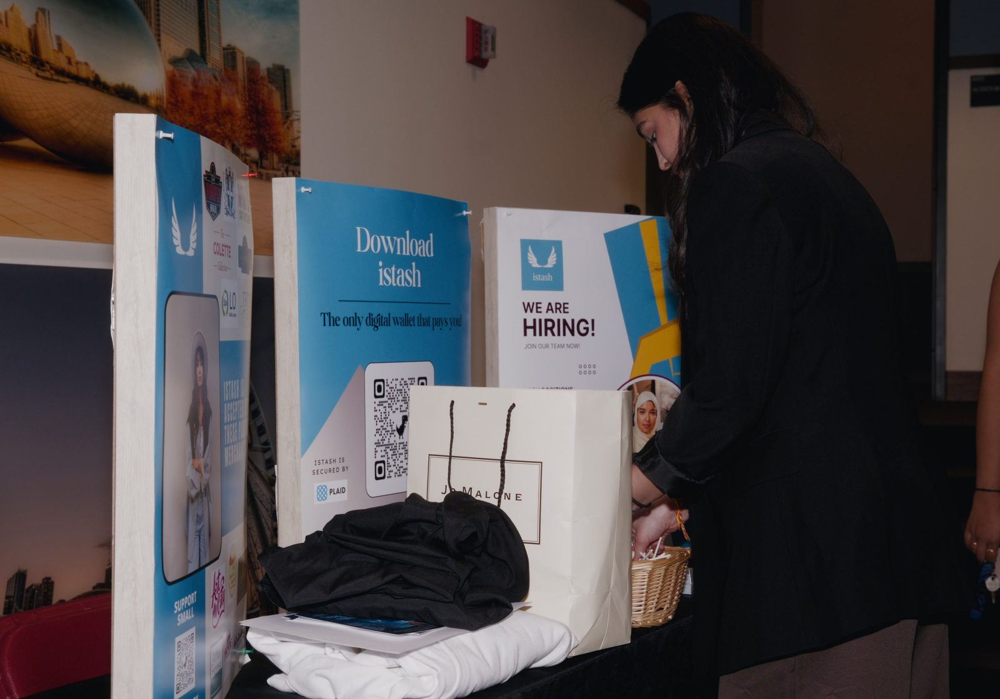
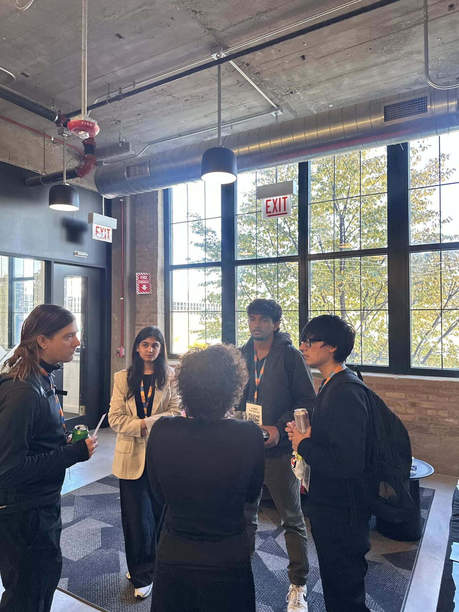
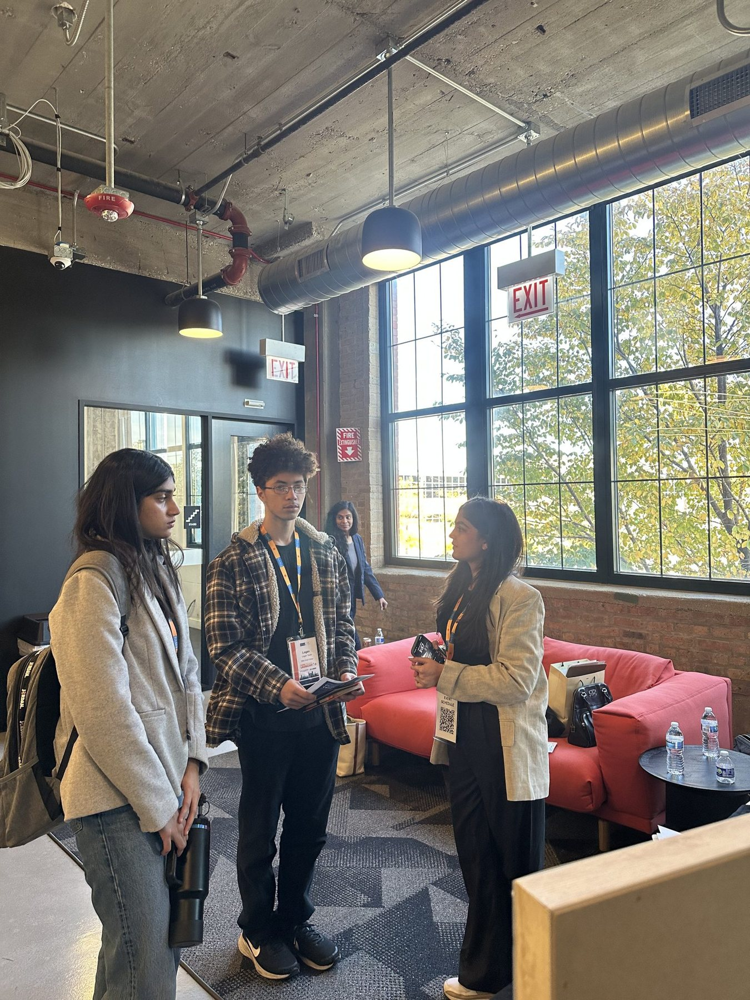

Connecting segmentation and email to the customer journey.
Reconstructed for portfolio presentation from the campaign scope and analysis I worked on. Only documented results are shown numerically: 150+, 5+, 5.
Which campaign and messaging signals should influence the next customer touchpoint?
iStash is an early-stage Chicago fintech app that gives users cashback at partner merchants. My work sat across user acquisition, email and merchant onboarding, which gave me a view of both how people first heard about the app and what happened after they signed up.
Marketing & Growth. Segmented users and tracked funnel stages in HubSpot and Mailchimp; ran targeted email outreach and cold calling; designed 20+ creative assets and tested visual and CTA variants; wrote the onboarding email copy; and onboarded merchants end to end.
User segments and funnel stages tracked in HubSpot and Mailchimp; 5+ creative and CTA variants tested against each other on social; and the merchant and user journey, including the onboarding emails sent automatically by the app.
Segmented users by funnel stage so outreach matched where each person was, tested creative and CTA variants against each other to choose designs for future posts, then carried the clearest messages into the onboarding emails.
Analysis 01 · Where each input came from
Analysis 02 · Creative & messaging testing
5+ visual and CTA variants were tested against each other across 20+ creative assets, and the results were used to choose designs for future social posts. The individual variant files aren't mine to reproduce here.
Analysis 03 · Acquisition
Merchant + user journey. No conversion-rate percentages shown. 150+ sign-ups and 5 merchants are the documented acquisition results.
Analysis 04 · CRM
Merchant copy · User copy · Automated touchpoint: audience-specific messaging at each step.
Outreach worked best when it matched where a user was in the funnel, and the clearest creative and CTA messages were worth carrying into the onboarding emails.
Segmenting users by funnel stage made outreach more relevant than one message for everyone.
The message and creative patterns that performed in-campaign kept showing up as useful signal later in the journey.
Keep segmenting outreach by funnel stage instead of sending one message to everyone.
Carry high-performing message and creative patterns into acquisition and the welcome journey, not just the next campaign.
Carry high-performing message and creative patterns into the next campaign and welcome journey, then continue testing by audience and touchpoint.
150+ user sign-ups in 2 weeks through targeted email outreach and cold calling, 5 merchants onboarded end to end, and 3 onboarding emails written for the app. These are the only results documented for this project; no conversion rate, CTR, or revenue figures are available to report.
The work outside the dashboard: setting up merchant outreach signage and networking with the team at startup events around Chicago.



Performance data was most useful when I could connect it back to the actual customer journey: not just the campaign dashboard.
This project taught me that a performance signal doesn't belong to one campaign. The clearest gains came from carrying a working pattern across touchpoints instead of treating each one as a separate problem, and from testing with discipline rather than volume: five well-designed variations told us more than a dozen untargeted ones would have.